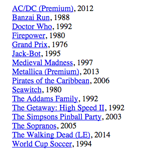

The pinball map API can be used to automatically update the machines on a location's website. Rather than having to update your page yourself, you or customers that have been to your establishment can add or remove machines on the pinball map which in turn will be reflected on your site. This would be a nice feature to have for a business where the owner is not personally running the website. Rather than calling up who is running their site or letting the machine list being inaccurate, the pinball map will keep things up to date for you!
The 'GET' request format for fetching data about the machines at a location requires determining the location's ID:
http://pinballmap.com/api/v1/locations/:id/machine_details.json
This information can be found on the pinball map or by making a 'GET' request to the API for all the locations in a region to find the location of interest's ID
The code to query the API for the Portland region returning an array of name/id object pairs looks like this:
var req = new XMLHttpRequest();
req.open('GET', 'http://pinballmap.com/api/v1/region/portland/locations.json', false);
req.send();
var data = JSON.parse(req.responseText);
name_id = []
for (var i=0; i<data.locations.length; i++) {
var object = {"name":data.locations[i].name, "id":data.locations[i].id}
name_id.push(object);
}
The data we get back looks like this:
...
45: Object id: 6350 name: "Bushwhacker Cider"
46: Object id: 3014 name: "Buster's Texas-Style Barbecue"
47: Object id: 5184 name: "Cascade Bar & Grill"
48: Object id: 866 name: "C-Bar"
...
Our location of interest in this case is C-Bar, which we see has a location ID of 866. Now we are ready to write our script to allow machines to be dynamically updated on the C-Bar website.
This simple javascript script will append to the end of the page a list of the machines currently at a given location, showing the machine name with a link to the Internet Pinball Machine Database as well as the year of the machine:
var req = new XMLHttpRequest();
req.open('GET', 'http://pinballmap.com/api/v1/locations/866/machine_details.json', false);
req.send();
var data = JSON.parse(req.responseText);
var machines = [];
var list = document.createElement('ul');
for (var i=0; i<data.machines.length; i++) {
var name = data.machines[i].name;
var site = data.machines[i].ipdb_link;
var year = data.machines[i].year;
var info = document.createElement("ul");
info.innerHTML = "<a href=" + site +">" + name +"</a>" + ", " + year;
list.appendChild(info);
machines.push(info);
}
document.body.appendChild(list);
An image of the list appended to a page:
The pinball map API allows us to pull data from it so that establishments can have an up-to-date listing of the machines present. With some slightly more complicated code, establishments can also include a current high score ranking for each of the machines on location which may be fun for friendly competition amongst players or even an incentive to win prizes for having the highest score at a given time. Press next to learn how to have high scores included on your site!
Next